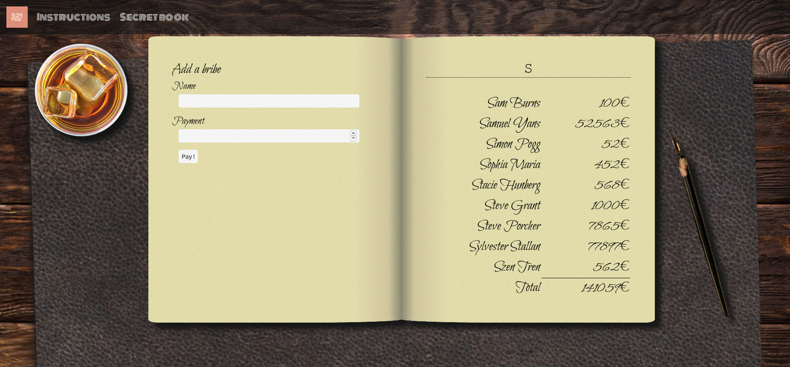
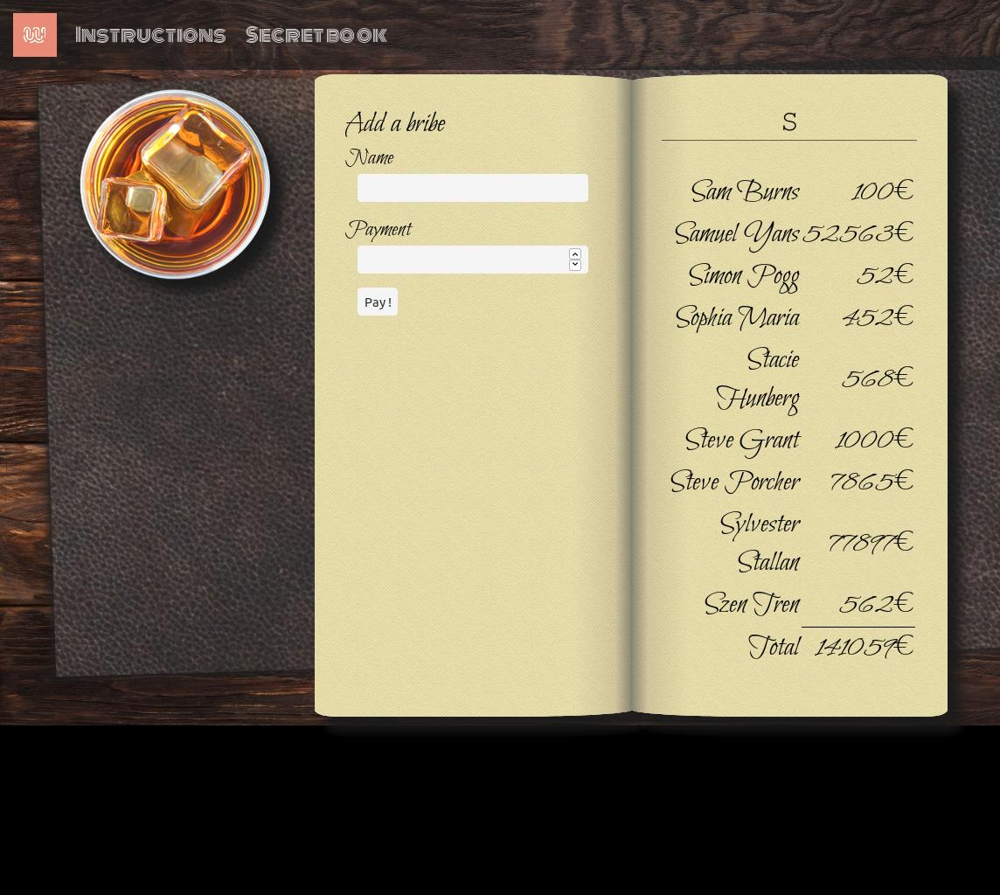
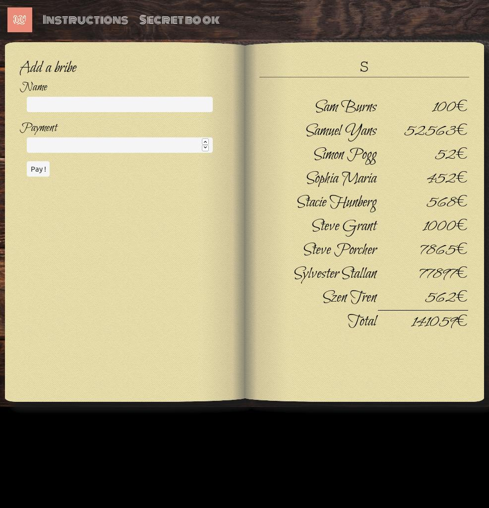
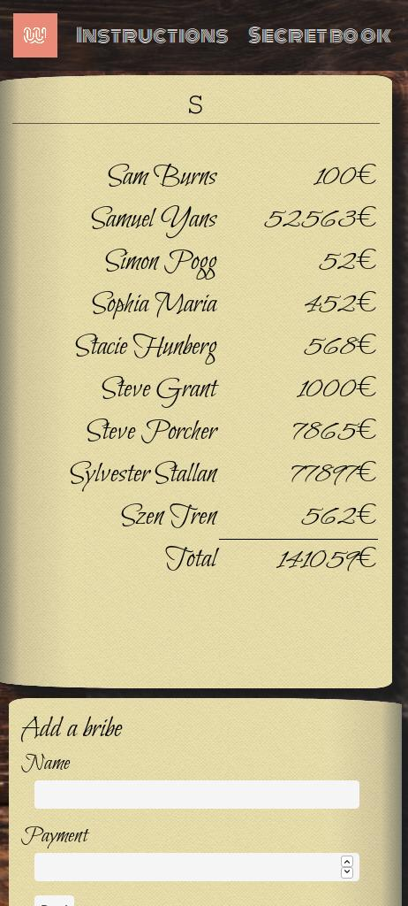

1930. Prohibition. Chicago is under Al Capone's rule. Hidden bars, prohibited
alcohol,
drugs, gambling and
prostitution.
The mafia king thrives using violence, strength, fear, but also money. He has to distribute bribes
to many
personalities, from judges to policemen, to keep his business alive.
You are his "special" accountant. You have to keep track of all the bribes, all the
names,
all the payments. It is a lot of money, and a big responsibility. You need to be very organized,
that's why
you keep all the records in your secret book.
Your instructions
Start with some CSS (~ 1 hour)
First, please start by cleaning your desk. You can access it by clicking on the "Secret Book"
link in
the navbar.
Carefully follow the instructions below. You can also look at the screenshots folder within the
image folder of
this project. It contains the desk configurations for all the screen sizes, as described in the
following points.
At the beginning, only focus on a resolution >1200px.
You have to put your whisky glass on the left and your ink pen on the right of your desk, with
your
secret book in the center.
(The whisky and ink pen images are already in the HTML. You have to use flexbox and respect
the alignment
of each element).
Do not hesitate to create html containers and customize the given stylesheet book.css.

Screenshot >1200px
Here we go! Your desk is now a little smaller. Between 1100px and 1200px, the ink pen should
disappear.

Screenshot 1100px to
1200px
A little thirst after all this work?
Using your DOM manipulation knowledge you will have to display an empty glass when you click
on the whisky glass.
The image of empty glass is available here: image/empty_whisky.png
When your desk is smaller (between 800px and 1000px), the glass will also disappear.

Screenshot 800px to 1000px
Finally for a desk <800px, the left page of the notebook should appear below the right page.

Screenshot 320px to 800px